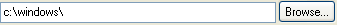

(title = "Save", width = 30, filter = "", ext = "",
file = "", flags = false, status = '', mandatory)
Use SaveFileControl when you want the user to enter a file name to save to, with the option of browsing for it.
The browse button brings up the standard Windows Save file dialog with the specified title and the OFN.OVERWRITEPROMPT and OFN.PATHMUSTEXIST flags.
Methods:
Same as OpenFileControl plus:
See also: OpenFileControl
Example:
Controller
{
Title: 'test'
Xmin: 250 // window width
Ymin: 200 // window height
New(tip = 'file to save') // pass parameters from external
{
// values setted at runtime
.sf1 = .Vert.SaveFile1 // path of the control
.sf1.Set('c:\\Tempfile\\test.txt') // set SaveFile1 field value
.sf1.SetDefExt('txt') // default file extension
.sf1.SetStatus(tip) // SaveFile1 field tooltip
// SaveFile1 files filter
.sf1.SetFilter('Text Files (*.txt)\000*.txt\000')
}
Controls:
(Vert
(Skip 10)
(Static 'SAVE FILE TEST' font:'MS sans serif' size:14)
(Skip 10)
(SaveFile name: 'SaveFile1'
title: "Save File test",
width:15
)
(Skip 10)
(SaveFile name: 'SaveFile2'
title: "Save File test",
filter: "All Files (*.*)\000*.*\000",
file: 'c:\\Tempfile\\',
status: 'file to save',
width:15
)
)
NewValue(value,source)
{
// value and source returned by a field change
if (source is .sf1)
{
Print('SaveFile1 field value is '$.sf1.Get())
Print(.sf1.GetFilePath())
Print(.sf1.GetFileName())
// save the file ...
}
if (source.Name is 'SaveFile2')
{
Print('SaveFile2 field value is '$value)
Print(source.GetFilePath())
Print(source.GetFileName())
/*
save the file ...
*/
}
}
}